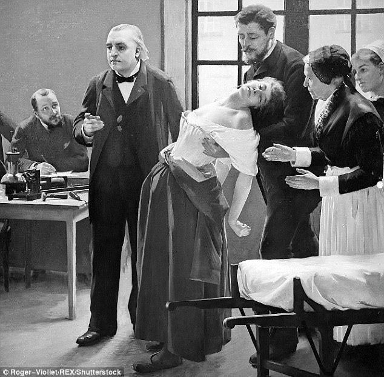
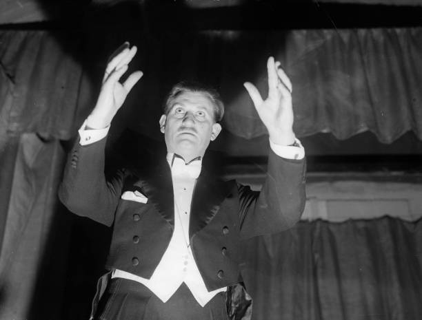
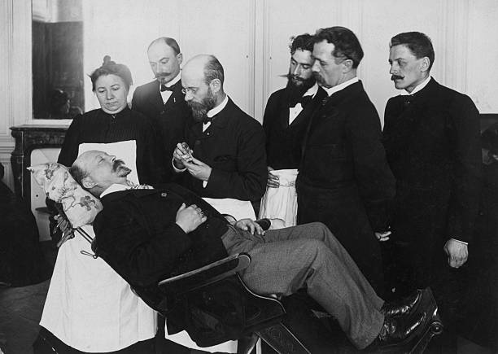
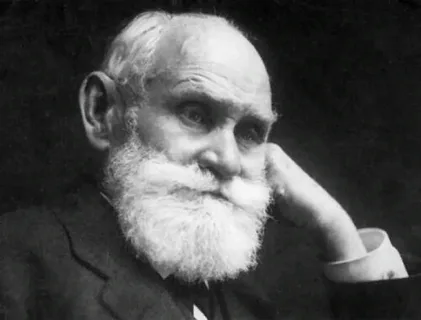

HypnoLab
.png)
Гипноз

— это ключ к тайнам и ресурсам вашего подсозания.
Хочешь попробовать?
Что такое HypnoLab
История гипноза
Донаучный этап
В древности и средневековье гипнотические практики проявлялись как магические ритуалы с элементами религии и мифологии. Жрецы и маги применяли их для изгнания нечистой силы и лечения одержимости.
Эпоха Франца Антона Месмера

Венский врач Месмер (1734–1815) впервые проявил научный интерес к внушению и применял его для лечения, но его идеи не были признаны научным сообществом.
Введение термина "гипноз"
В 1843 году офтальмолог Джеймс Бред в книге «Нейрогипнология» ввёл термин «гипноз», объяснив его как состояние нервного сна, вызванного фиксацией взгляда. Бред отверг мистику и связал явление с функциональными изменениями нервной системы.
"Золотой век гипнотизма" во Франции.

В 1880-е годы Ж.-М. Шарко и другие учёные накопили обширные данные по гипнозу. В 1882 году Французская академия наук признала гипнотическое внушение лечебным методом.
Гипноз в России.

В конце XIX века В. М. Бехтерев добился признания гипноза как терапевтического метода с научным обоснованием.
Физиологическая концепция гипноза И. П. Павлова

Павлов разработал теорию гипноза как частичного сна с активным центром бодрствования, что расширило научное понимание этого состояния.